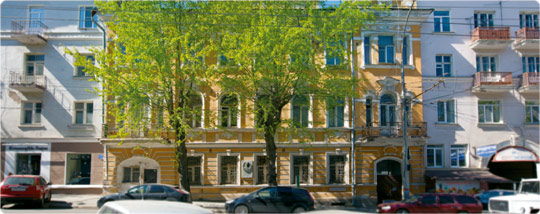

|
1
|
Великий князь Михаил Романов – Наталья Брасова
Королёвские номера
|
прослушать аудиоэкскурсию
скачать mp3 >> |
|

Здесь, в «Королёвских номерах», провёл последние месяцы своей жизни великий князь Михаил Романов. А в пасхальные праздники 1918 года он прожил здесь десять счастливых дней со своей любимой и верной супругой – графиней Натальей Брасовой. Суровый человек: боевой офицер, командовавший знаменитой «Дикой дивизией», он души не чаял в своей Натали. Даже в брак с нею великий князь вступил тайно, вопреки прямому запрету брата, Николая II, за что был уволен со всех должностей и постов. Долгое время ему было запрещено возвращаться в Россию. Михаил жертвовал многим – и было ради чего! Морис Палеолог, посол Франции в России, увидев Наталью Сергеевну впервые, записал в дневнике: «Она прелестна… Малейшее ее движение отдает медленной, волнистой, нежнейшей грацией…» К тому же Натали, происходившая из интеллигентнейшей московской семьи адвоката Шереметевского, была чрезвычайно умна и образованна. В одном из последних посланий жене Михаил писал: «Моя дорогая красавица Наташа, нет слов, чтобы отблагодарить тебя за всё, что ты даёшь мне в жизни. Наше пребывание здесь будет самым ярким воспоминанием в моей жизни. Не печалься – с Божьей помощью мы снова скоро увидимся. Пожалуйста, верь моим словам и в мою нежную любовь к тебе, моя дорогая, дражайшая звездочка, которую я никогда, никогда не покину и не обижу. Я обнимаю и всю, всю тебя целую. Весь твой, Миша». (Пермь, Май 1918 г.) |
||